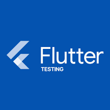
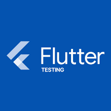

The "MatterMind" project represents a significant stride in my journey as a developer, where I crafted a Flutter application that serves as a powerful tool for collecting user responses and presenting valuable statistical insights.


 

Built on the versatile Flutter framework, the "MatterMind" app showcases my proficiency in creating dynamic and visually appealing user interfaces that seamlessly adapt to various platforms.
The application's capabilities extend beyond mere data collection – it harnesses the power of Firebase to store responses securely and facilitate real-time data synchronization, ensuring accuracy and reliability in presenting insights.
The integration of Google APIs further enriches the app's functionality, providing the means to extract meaningful information from collected data and present it in an easily digestible format.
Employing the GetX library, I ensured efficient state management and navigation within the app, leading to a smooth and satisfying user experience.
Quality assurance was paramount, and as such, I implemented comprehensive unit and widget tests using the FlutterTest framework to ensure the app's robustness.
The "MatterMind" project is a testament to my dedication to crafting innovative and valuable solutions that leverage technology to enhance decision-making and understanding.
click on small images to zoom